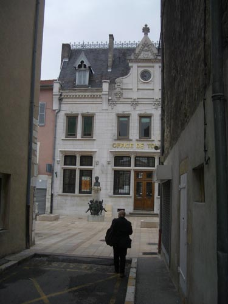
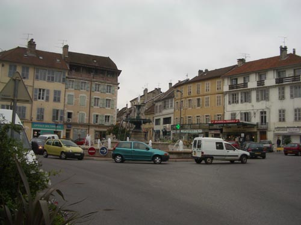
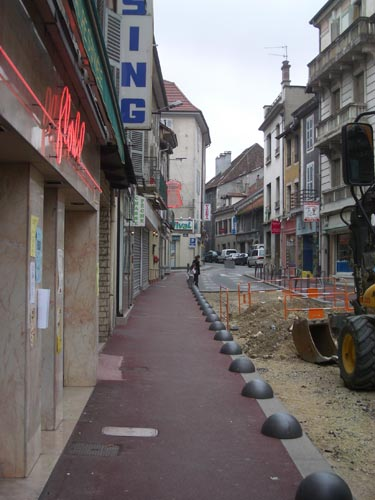
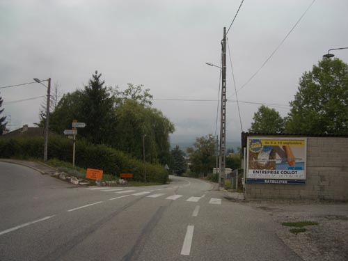
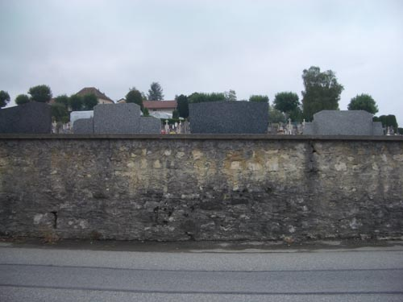
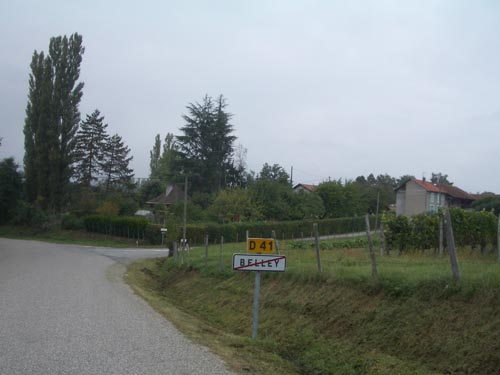

| Belley | ||
|
continue on up the street a short distance and then cross to the other side and enter a short street - Rue de Palais - at the end of which you can see the tourist office of Belley  go inside - we found the lady that was on duty when we visited very helpful - once we had explained our purpose - she gave us a map of Belley and marked on it the route to Billignin - and the former location of Hotel Pernollet - now an old peoples' home leaving the tourist office turn to the left - past the 'passing she wolf' - the mascot of Belley - and on up ithe Grande Rue until you get to Boulevard Verdun and the Place de Terreaux on your left  on the diagonally opposite corner of the square is the Rue Saint-Martin  start up this road and follow it until you come to the roundabout - turn to your right and take the road going gently down hill  keep on going - past the cemetery  until you get to the turn off to Billignin  |
||